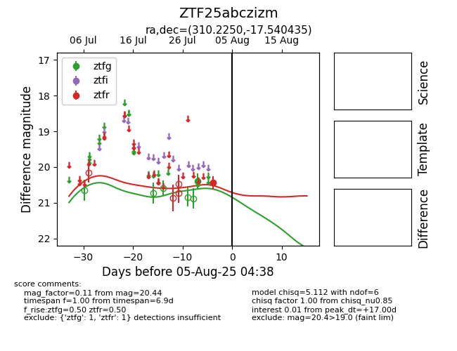

Target ZTF25abczizm at 2025-08-05 04:38, see:
FINK: fink-portal.org/ZTF25abczizm
Lasair: lasair-ztf.lsst.ac.uk/objects/ZTF25abczizm
ALeRCE: alerce.online/object/ZTF25abczizm
alt names
ZTF25abczizm (ztf,fink)
coordinates:
equatorial (ra, dec) = (310.2250,-17.54043)
galactic (l, b) = (28.3160,-31.83662)
photometry
last ztfg=20.39, ztfr=20.44
1 ztfg, 1 ztfr detections
